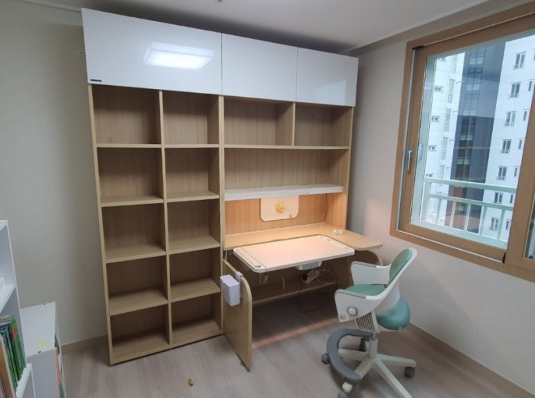
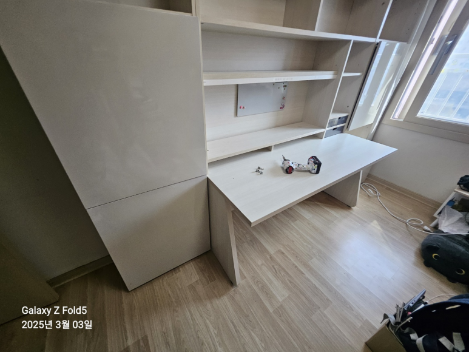
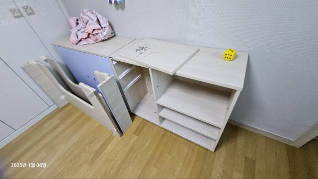
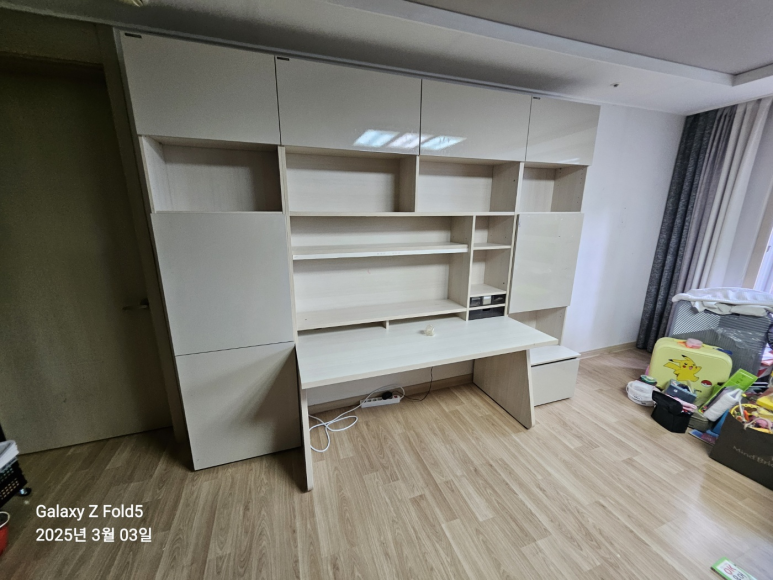
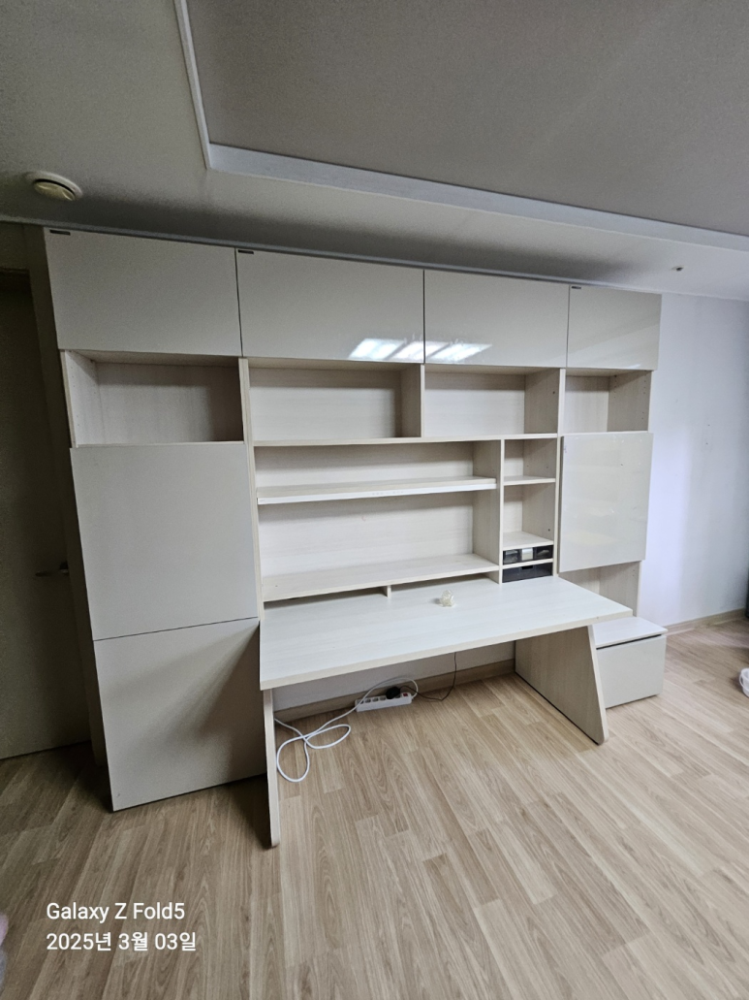
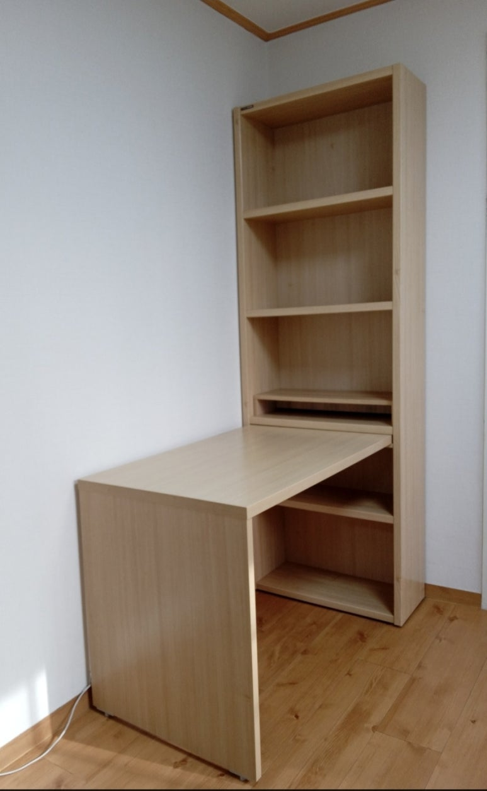
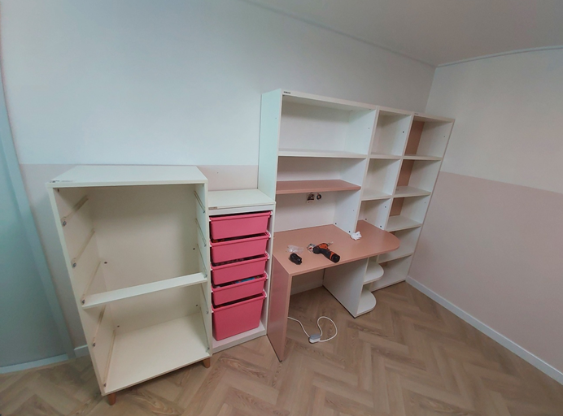
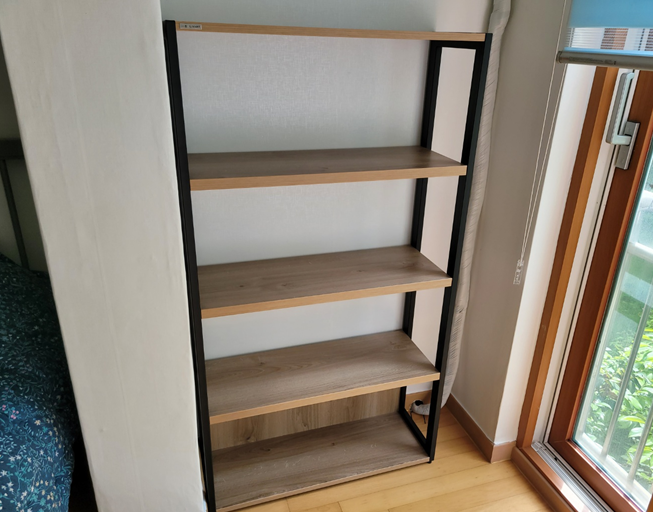

한샘 책상 이전설치
책상·책장 세트 해체부터 재조립까지
아이 방을 바꾸거나 이사를 하면서 한샘 책상과 책장을 함께 옮겨야 하나요? 책상과 책장이 연결된 세트는 통째로 들기 어려워요. 코니처는 한샘 책상·책장 세트를 해체해서 옮기고, 새 자리에서 다시 조립해 드려요. 책상 작업은 경력이 평균 10년 넘는 지역 기사님이 직접 방문해서 진행해요.

한샘 책상·책장 이전설치
세트 기준 13만 원부터
표시된 금액은 최소 시작 금액이에요. 가구 크기와 수량, 이전 거리, 층수, 엘리베이터 사용 여부 등 작업과 현장 상황에 따라 금액이 달라져요. 정확한 금액은 사진을 보고 문자로 안내드려요.
현금가 기준이며, 카드 결제나 현금영수증이 필요하면 부가세가 별도예요.
문자 상담 신청하기한샘 책상·책장, 옮길 때 살펴야 할 것
한샘 책상은 책상만 따로 있는 경우도 있지만, 상부 책장이나 옆 책장, 서랍장과 하나로 연결된 세트가 많아요. 그래서 옮기기 전에 구성부터 확인해요.
- 연결된 세트 구성상부장과 책상, 옆 책장이 서로 연결돼 있으면 연결 부위를 풀고 나눠서 옮겨요.
- 벽 고정키가 큰 책장은 넘어짐 방지를 위해 벽에 고정돼 있을 때가 있어요. 새 집에서 다시 고정할지 상담할 때 함께 정해요.
- 서랍과 보조 상판이동식 서랍장, 라운드형 보조 상판처럼 따로 움직이는 부분도 빠짐없이 챙겨야 해요.
- 새 방의 벽 길이책상과 책장을 나란히 놓던 구성이 새 방에서는 벽 길이 때문에 달라질 수 있어요.
한샘 책상 이전설치 과정
-
해체
상부장과 선반, 서랍을 먼저 분리하고 책상과 책장의 연결 부위를 풀어요.
-
포장과 운반
해체한 부재를 포장해서 새 자리로 옮겨요. 이사도, 아이 방을 바꾸는 방간이동도 가능해요.
-
재조립
새 방에서 책장과 책상을 다시 세우고 서로 연결해요.


-
마무리
선반과 서랍을 제자리에 끼우고 흔들림이 없는지 확인한 뒤 마무리해요.

책상 작업 순서와 방법은 가구 구성과 현장 상황에 따라 기사님과 상담 후 진행돼요.
새 방에 맞춰 배치를 바꾸고 싶다면
책상을 창가 쪽으로 옮기거나, 책장을 책상 옆이 아닌 다른 벽에 따로 두고 싶을 때도 있어요. 세트 구성에 따라 나눠서 설치할 수 있는 경우도 있고, 연결 구조 때문에 어려운 경우도 있어요. 새 방 사진이나 원하는 배치를 함께 보내주시면 상담할 때 가능한지 확인해 드려요.
책상 견적 받을 때 필요한 것
- 책상·책장 전체 사진상부장과 옆 책장까지 한 화면에 나오게 찍어 주세요.
- 구성책상, 책장, 서랍장이 각각 몇 개인지 알려주세요.
- 지역과 층수출발·도착 지역, 이전 거리, 각 집의 층수와 엘리베이터 여부를 보내주세요.
- 새 방 벽 길이책상을 놓을 벽 길이를 알면 미리 확인할 수 있어요.
책상 옮기기 전에 해 둘 일
책장에 꽂힌 책과 서랍 속 물건은 미리 상자에 담아 비워 주세요. 책상 위 모니터와 전자기기도 따로 챙겨 두시면 해체를 바로 시작할 수 있어요. 책상 스탠드나 멀티탭처럼 책상에 붙여 둔 소품도 미리 떼어 두시면 좋아요. 새 방에서는 책상을 놓을 벽 앞을 비워 두시고, 콘센트 위치도 함께 확인해 두세요. 이삿짐 업체와 같은 날 진행한다면 시간 순서를 상담할 때 함께 말씀해 주세요.
책상 이전이 필요한 경우
다시 세운 책상과 책장




최근 한샘 책상·책장 작업 지역
책상 이전은 서울과 경기, 인천 어디든 출장 가능해요.
- 잠실한샘 책상 · 방간이동 분해 후 재조립
- 용인 수지한샘 책상 세트·책장·라운드책상 · 이전설치
- 양천 신월한샘 책장책상·서랍 · 방간이동
- 동대문 전농한샘 책상 · 방간이동 재배치
- 강서 가양한샘 책상 세트·책장 · 이전설치
- 강동 고덕한샘 책상 · 방간이동 분해 후 재조립
- 오산한샘 책장책상·서랍 · 방간이동
- 강동 천호한샘 책장책상 · 방간이동
- 죽전한샘 책장책상·서랍 · 방간이동
자주 묻는 질문
책상 해체와 재조립을 같은 날 할 수 있나요?
네, 하루에 해체부터 재조립까지 할 수 있어요. 세트 구성과 이동 거리에 따라 일정을 함께 정해요.
책상만, 또는 책장만 옮길 수도 있나요?
네, 필요한 가구만 옮기는 것도 상담할 수 있어요. 옮길 가구를 사진에 표시해서 보내주세요.
아이 방 두 개의 가구를 서로 바꿀 수 있나요?
네, 방간이동으로 두 방의 가구를 바꿔 설치하는 경우도 많아요. 두 방의 가구 사진을 함께 보내주세요.
책상과 침대를 함께 옮길 수 있나요?
네, 침대나 옷장 같은 다른 가구도 함께 문의하실 수 있어요.
책상 이전설치 비용은 어떻게 정해지나요?
책상과 책장, 서랍장 구성에 이동 거리와 층수, 엘리베이터 여부를 더해서 정해요. 세트 사진을 보내주시면 금액을 알려드려요.
책상 이전 견적 문의
책상 세트 전체 사진과 지역을 보내주시면 금액과 일정을 알려드려요. 문자 상담은 07~18시예요.
문자 상담 신청하기